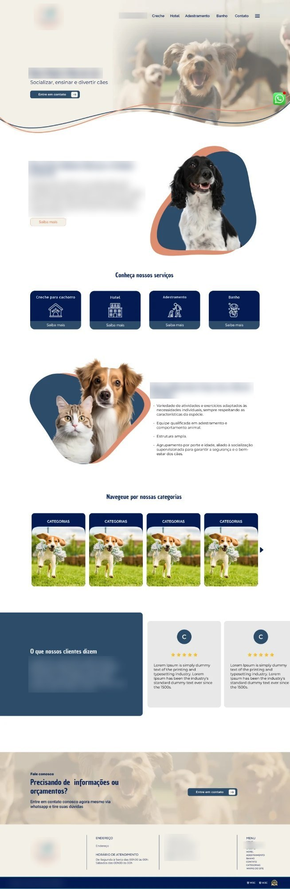
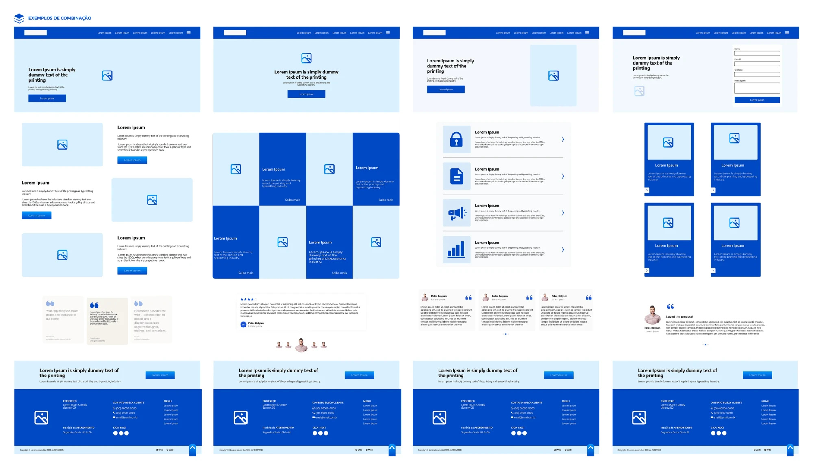

Case study · UX/UI Design · DesignOps
Designem escala
Como um sistema modular transformou a produção de sites institucionais, sem transformar marcas diferentes em versões do mesmo template.
- Empresa
- Grupo Ideal Trends
- Minha atuação
- UX/UI Designer e idealizadora
- Áreas
- UX/UI, DesignOps, Design Modular
- Equipe
- 4 designers
- Construção
- 2 meses (1ª versão)
- Status
- Implementado e em uso


 Pet · afetivoServiços · corporativoClínica · orgânico
Pet · afetivoServiços · corporativoClínica · orgânico
01 · Visão geral
Mais velocidade, sem um template único
No Grupo Ideal Trends, uma equipe de 4 designers enfrentava prazos curtos e uma fila com mais de 150 sites pendentes. Investiguei o processo, ouvi quem participava dele e identifiquei estruturas que se repetiam. O resultado foi uma biblioteca modular de layouts no Figma, inspirada em Design Systems.
Indicadores operacionais estimados a partir da experiência profissional. Não há registros históricos detalhados da produção.
A jornada do projeto
- Contexto e desafioAlta demanda e pedido da gestora
- DiscoveryImplementação e designers
- Pesquisa e análiseBriefings, referências e padrões
- DefiniçãoDores, necessidades e hipóteses
- IdeaçãoAbordagem modular
- DesenvolvimentoBiblioteca em 2 meses
- ImplementaçãoArquivo com os 4 designers
- AdoçãoAdaptação e contribuição
- ResultadosProdutividade e fila zerada
- EvoluçãoAprendizados e automação
02 · Contexto e desafio
Clientes diferentes, estruturas parecidas
A empresa produzia sites para negócios de segmentos variados. Mesmo com marcas distintas, quase todos os projetos precisavam das mesmas peças:
Construir essas estruturas a cada projeto consumia o tempo que deveria ir para a identidade visual de cada cliente. A gestora me pediu um mockup base para acelerar a produção.
Um template único
Resolveria parte da velocidade, mas criaria um problema novo: sites cada vez mais parecidos.
Equilibrar três necessidades
Eficiência operacional, liberdade criativa e personalização visual.
Objetivo: criar uma solução reutilizável e escalável que reduzisse o esforço com estruturas recorrentes, ampliasse a capacidade da equipe e preservasse a identidade de cada cliente.
03 · Discovery
Entender o problema antes de desenhar
O design não falava com o comercial. Depois da venda, a implementação conduzia as reuniões com o cliente e montava o briefing. Era com ela que os designers tiravam dúvidas. A investigação ouviu os dois lados desse fluxo.
O que cada lado contou
Origem das informações
- Clientes com dificuldade de traduzir expectativas em requisitos
- Referências visuais ausentes ou pouco compatíveis
- Conteúdos e materiais incompletos
- Mudanças de expectativa ao ver a proposta
- Comunicação entre equipes a melhorar
Transformação em interface
- Pesquisa complementar sobre cada cliente
- Decisões estruturais repetitivas
- Referências dispersas
- Prazos reduzidos para explorar
- Retrabalho com mudanças de conteúdo
- Métodos individuais de trabalho
Oportunidade: reduzir o esforço de transformar informações em estruturas visuais.
Nem tudo seria resolvido por uma biblioteca. Delimitei o escopo nos problemas operacionais da produção dos layouts.
O briefing na prática
Fora do escopo
Coleta, organização e clareza das informações vindas do cliente.
Foco da solução
O esforço de transformar essas informações em estruturas e mockups.
Ao receber um projeto, eu consultava o site e o Instagram do cliente para entender identidade, linguagem, fotos e posicionamento. Essa pesquisa continuava essencial. O que dava para otimizar era a construção que vinha depois.
Jornada do designer · antes
Padrões em projetos anteriores
Analisei cinco mockups anteriores, de segmentos como veterinário, alimentício e mobiliário industrial. Identidades diferentes, mesma espinha dorsal: header, hero, sobre nós, serviços, blocos alternados, depoimentos, CTA e footer. A função de uma seção podia ser reutilizada sem definir a aparência final.
04 · Síntese e definição
Seis descobertas, um problema claro
Começa antes do Figma
Interpretar, pesquisar e organizar fazem parte da produção.
Necessidades em comum
Segmentos diferentes, seções com a mesma função.
Pesquisa × construção
As duas disputavam o mesmo tempo.
Centralizar ajuda
Soluções de um projeto podiam servir a outros.
Autonomia é adoção
Nada de template obrigatório.
Problema coletivo
A fila era da operação, não de uma pessoa.
Matriz CSD
Certezas
150+ projetos pendentes4 designersEstruturas recorrentesMétodos individuaisTempo limitadoSuposições
Reutilizar aceleraCentralizar facilitaFlexibilidade preserva a identidadeColaboração faz evoluirAutonomia favorece a adoçãoDúvidas
Como organizar?Quais módulos priorizar?Como evitar sites parecidos?Como medir?Como a equipe vai reagir?Hipótese: com uma biblioteca de estruturas reutilizáveis, organizadas e flexíveis, os designers gastariam menos esforço com seções recorrentes e mais tempo com as decisões visuais de cada projeto.
Critérios de sucesso definidos para a solução.
05 · Ideação
Por que um sistema modular
Criação individual
Alta liberdade, mas mantém o esforço repetitivo.
VelocidadeLiberdadeSistema modular
Reutiliza a lógica estrutural sem impor uma aparência.
VelocidadeLiberdadeTemplate fixo
Rápido, mas homogeneiza os sites.
VelocidadeLiberdadeRepresentação qualitativa da comparação entre as abordagens. Apresentei a proposta à gestora e recebi autonomia para desenvolver e implementar.
Rastreabilidade das decisões
| Necessidade | Decisão de design | Benefício |
|---|---|---|
| Reduzir decisões repetitivas | Estruturas reutilizáveis | Menos esforço de construção |
| Organizar o repertório | Biblioteca centralizada no Figma | Acesso fácil |
| Achar rápido | Componentes, seções e modelos | Seleção ágil |
| Atender segmentos diferentes | Variações de composição | Flexibilidade |
| Preservar a identidade | Módulos personalizáveis | Diferenciação |
| Respeitar métodos individuais | Nada obrigatório | Autonomia |
| Compartilhar e ampliar | Arquivo aberto a contribuições | Evolução contínua |
06 · A solução
Uma biblioteca em três níveis
Construída em cerca de dois meses, em paralelo às demandas normais, e centralizada num arquivo compartilhado do Figma chamado Mockup base. O maior desafio foi organizar o conteúdo para que fosse fácil achar, escolher e adaptar cada peça.
Componentes
Unidades de apoio reutilizáveis.
Seções
Banners, institucional, serviços, produtos, diferenciais, depoimentos, CTA, contato.
Modelos
Combinações de ponto de partida, sem obrigação de seguir.
Mockup personalizado
Identidade, tipografia e direção de arte de cada cliente.


O que se reutiliza
O que se personaliza
Implementação e gestão da mudança
Houve resistência no início: cada designer tinha seu próprio processo. Por isso, a biblioteca foi liberada sem regras rígidas. Todos podiam selecionar, combinar, adaptar e acrescentar componentes, seções e modelos. Depois da adaptação, os 4 designers passaram a usar.
07 · Aplicação e resultados
Mesma lógica, marcas diferentes
Sete mockups posteriores comparados a cinco anteriores. Mesmo dentro do segmento pet, um espaço temático seguiu uma linha com texturas e a creche e hotel para cães, uma linha afetiva. Comparação qualitativa, sem teste controlado de usabilidade ou desempenho.
| Aspecto | Antes | Depois |
|---|---|---|
| Identidade visual | Aplicação concentrada | Integrada à composição |
| Tipografia | Menor exploração | Mais diversidade |
| Imagens | Tratamentos convencionais | Recortes e sobreposições |
| Composição | Estruturas convencionais | Mais variedade |
| Direção de arte | Limitada pelo tempo | Mais aprofundamento |
Resultados operacionais
Mockups por semana, por designer
Tempo de criação por mockup
| Capacidade estimada | Antes | Depois |
|---|---|---|
| Entregas semanais por designer | 5 | 7,5 |
| Capacidade semanal da equipe | 20 | 30 |
| Capacidade mensal projetada | 80 | 120 |
Estimativas da experiência operacional, com 4 designers e meses de 4 semanas. Não houve outras mudanças operacionais relevantes no período, mas não é possível isolar estatisticamente a contribuição da biblioteca.
Avaliação das hipóteses
| Hipótese | Evidência | Avaliação |
|---|---|---|
| Reutilizar reduz o tempo | De ~2 dias para 0,5–1 dia | Sustentada por relato |
| Modularidade aumenta a produtividade | +50% semanal estimado | Sustentada por relato |
| A personalização é preservada | Comparação de 12 mockups | Sustentada qualitativamente |
| A equipe adota | 4 de 4 designers | Confirmada por relato |
| Evolui coletivamente e continua relevante | Contribuições e uso contínuo | Confirmada por relato |
| Reduz retrabalho e aumenta a satisfação dos clientes | Sem indicadores | Não mensurada |
Para a empresa
- Mais capacidade com a mesma equipe
- Fila de pendências zerada
- Conhecimento centralizado
Para os designers
- Menos estrutura repetitiva
- Repertório compartilhado
- Autonomia e espaço para contribuir
Para os clientes
- Potencial de layouts mais rápidos
- Mais exploração da identidade
- Interfaces fiéis a cada negócio
Os benefícios para os clientes são consequências esperadas, não medidas por pesquisa de satisfação.
08 · Aprendizados
Eficiência e criatividade não são opostas
Classificar importa
A utilidade de uma biblioteca depende de como o conteúdo é organizado, não da quantidade.
Adoção é sobre hábitos
A ferramenta precisa trazer benefício sem impor um jeito único de trabalhar.
De individual a coletivo
As contribuições transformaram uma iniciativa minha num recurso da equipe.
Indicadores desde o início
Sem linha de base, os resultados dependem de estimativas.
Limitações
- Não havia ferramenta que registrasse tempos e entregas individuais
- Os outros três designers não integram mais a equipe para uma nova avaliação
- A comparação visual não comprova ganhos de usabilidade, acessibilidade ou conversão
O que eu faria diferente hoje
- Documentar o Discovery com mais formalidade: entrevistas, necessidades e critérios
- Começar com poucos módulos prioritários e validar o uso antes de ampliar
- Medir tempo por mockup, entregas, uso dos módulos, alterações e satisfação
- Definir governança: nomenclatura, documentação e critérios de inclusão
- Usar IA em briefings, referências e propostas estruturais, sem tirar a decisão do designer
Leitura completa
Quer ver todo o processo?
Pesquisa, decisões e limitações detalhadas no Medium.